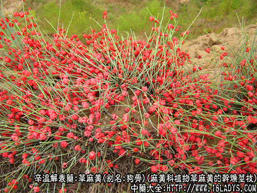
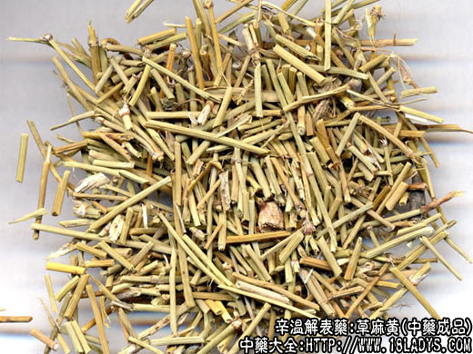
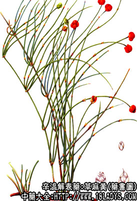

本品为常用中药。始载《神农本草经》，列为中品。
来源：为麻黄科植物，草麻黄、木麻黄、中麻黄的干燥茎枝。均为野生。
别名：狗骨、龙沙、卑相、卑盐。
产地：主产于山西、内蒙、甘肃、新疆、河北等地。
植物形态：草麻黄：草本状小灌木，高20～40厘米。本质茎匍匐土中，或稍露地外。绿色枝膜质鞘状，包于茎节上，下部1/3～2/3合生，上部二裂，裂片锐三角形。花单性异株，雄株花常3～5朵集成复穗状花序，稀单生，雌球花多单生于枝端，雌花二朵；成熟时苞片肉质、红色、内有种子两枚。
采收加工：立秋后霜降以前采收。太早则质嫩茎空，麻黄硷含量小，受霜冻则色变红，暴晒过久，色发黄。均影响疗效。
性状鉴别：草麻黄：细长圆柱形，有的带棕色木质茎。草质茎少分枝，黄绿色，节间有细纵棱线，节上有细小鳞片，2～3片，基部联合呈筒状，茎质脆，易折断，断时有粉尘飞出断面内心红黄色（俗称玫瑰心，为麻黄主要成分），微有香气，味苦涩。
以身干茎粗，淡绿色，断时有粉尘飞出，内心充实，味苦涩者为佳。
主要成分：含L-麻黄硷、伪麻黄硷、挥发油等。
药理作用：发汗、平喘、利水。
1、 发汗。仅在人加热时能增加其发汗量，动物实验尚未证实本品单独应用时有发汗效应。
2、 解热。麻黄发挥油及其主要成分松油醇，对正常小白鼠均有降温作用。
3、 解除支气管痉挛。麻黄硷和伪麻黄硷能松弛支气管平滑肌，且作用较缓和而持久，故能使呼吸平顺而止喘，亦即所谓“宣通肺气平喘”。
4、 利尿。伪麻黄硷有明显利尿作用。
5、 升压。麻黄硷能收缩血管而升高血压，其作用缓进而持久，可维持数小时。
6、 抗病。麻黄挥发油对流感病毒有抑制作用。
炮制：切咀，1、生用；2、蜜制。
三种麻黄原植物对照表：
名称
草麻黄
木麻黄
中麻黄
全形
草本状小灌木高20～40cm
小灌木，可高达1m
灌木高1m
木质茎
横卧土中或稍露地上
明显，直立或部分匍匐
茎枝较前二种粗壮
草质茎
分枝少，节间少（2.5~5.5cm）
分枝多，节间短（1.5～2.5cm）
节间长（3～6cm）
叶
2片，裂片锐三角形，下部筒状占1/3～2/3
叶大部合生上部1/4分离
叶多为三片轮生，基部2/3合生，裂片短，三角形。
性味：辛、苦、温。
归经：入肺、膀胱经。
功能：发汗、平喘、利尿。生用发汗力强，蜜制多用于平喘息止咳。
主治：风寒感冒，气喘咳嗽，水肿。适用于感冒风寒表证无汗者。
临床应用：主要用于平喘和治疗外感风寒。
1、用于平喘止咳。一般需配杏仁，为增强平喘作用。在肺热喘咳时（如肺炎、急性支气管炎），必须用石膏等清热药，入麻杏石甘汤；在肺寒喘咳时（如支气管哮喘、慢性支气管炎等），须加用干姜、细辛、五味子，为加强散寒、祛痰、镇咳的作用，方如小青龙汤。
要注意的是，麻黄虽有治喘作用，但连续长时间使用后，效力会大减，所以，慢性咳嗽者一般不宜久服，可间歇使用。麻黄有兴奋大脑皮层的作用，如用量较大，往往会引起过度兴奋而致失眠，用时宜从小量开始，逐渐探索合适的分量。用蜜炙麻黄副作用较少。
2、用于治疗外感风寒（如感冒和流感早期）。冬季外感，寒邪在表，脉浮紧，头、身肌肉紧张而疼痛者，用之最为合适。春夏秋的外感风寒也可以用，但伤风有汗则不宜用，所谓“有汗不得用麻黄”，以防发汗太过。 麻黄配桂枝，更能增强发汗作用以解散风寒，方如麻黄汤。
3、用于治疗水肿。取其有发汗、利尿的作用以减轻水肿。一般与白术同用。治疗水肿而伴有表证者，偏寒的，配羌活、防风；偏热的，配石膏。
4、用于治疗风湿关节痛。配薏苡仁或白术等，通过发汗祛湿，缓解疼痛。
使用注意：有高血压者慎用麻黄，用于解表时可以用紫苏叶代替；用于风湿关节痛时可以用鹿含草代替。
用量：常用量：1.5～9g，用4.5～6g较普遍。虚弱者用2.4～4.5g便可。体质稍好者用于发汗、平喘时，有时须用至9～12g，用于治疗风湿关节痛时，用量可较大。
处方举例：1、麻黄汤《伤寒论》：麻黄6g、桂枝6g、杏仁6g、炙甘草3g，水煎服。
2、麻杏石甘汤《伤寒论》：麻黄4.5g、杏仁9g、生石膏18g（先煎）、甘草3g，水煎服。
3、小青龙汤《伤寒论》：麻黄6g、桂枝6g、白芍6g、细辛3g、干姜6g、五味子3g，制半夏6g、炙甘草3g，水煎服。
注：主要成分：麻黄硷、伪麻黄硷，挥发油。
附：麻黄根：为草麻黄的干燥根。呈圆形，有分枝（支根），外表赤褐色，木质坚硬，断面淡红或黄白色，细腻放射状纹理不明显，味微苦。不发汗而能止汗，多用于体虚多汗者。